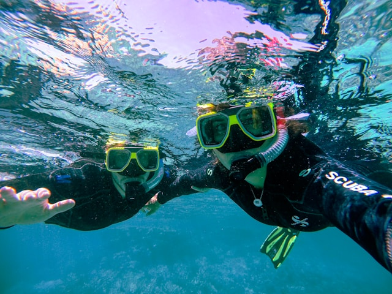
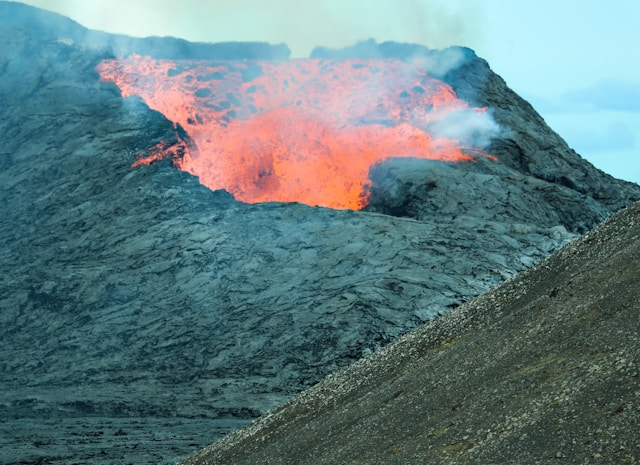
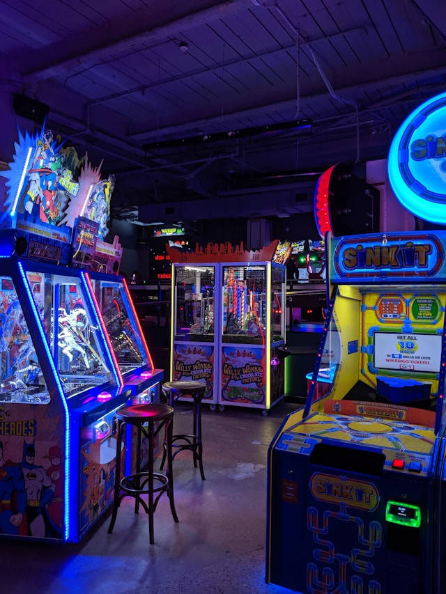
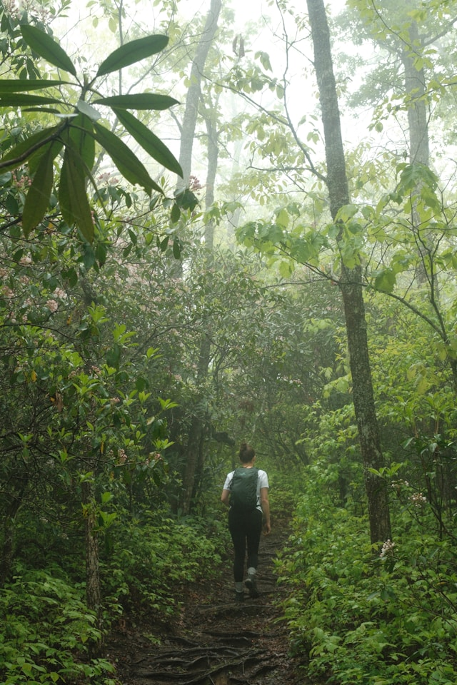

Come enjoy all that Taniti has to offer!
| Most people visit Taniti to enjoy the beaches, explore the rainforest, and visit the volcano. However, there are plenty of other things to do for people of any age! | |
| Entertainment | Sightseeing & Other Popular Activities |
|---|---|
|

|
|
Many of these activities are in Merriton Landing, which is a rapidly developing area on the north side of Yellow Leaf Bay.  |
Most tourists spend most of their time in Taniti City, which boasts native architecture and nearby white, sandy beaches that encircle Yellow Leaf Bay.  |